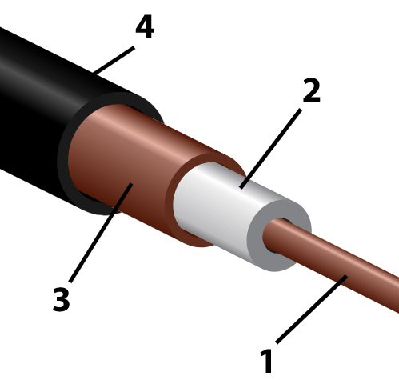

Устройство коаксиального кабеля

Коаксиальный кабель (см. рисунок) состоит из:
- 4 — оболочки (служит для изоляции и защиты от внешних воздействий) из светостабилизированного (то есть устойчивого к ультрафиолетовому излучению солнца) полиэтилена, поливинилхлорида, повива фторопластовой ленты или иного изоляционного материала;
- 3 — внешнего проводника (экрана) в виде оплетки, фольги, покрытой слоем алюминия плёнки и их комбинаций, а также гофрированной трубки, повива металлических лент и др. из меди, медного или алюминиевого сплава;
- 2 — изоляции, выполненной в виде сплошного (полиэтилен, вспененный полиэтилен, сплошной фторопласт, фторопластовая лента и т. п.) или полувоздушного (кордельно-трубчатый повив, шайбы и др.) диэлектрического заполнения, обеспечивающей постоянство взаимного расположения (соосность) внутреннего и внешнего проводников;
- 1 — внутреннего проводника в виде одиночного прямолинейного (как на рисунке) или свитого в спираль провода, многожильного провода, трубки, выполняемых из меди, медного сплава, алюминиевого сплава, омеднённой стали, омеднённого алюминия, посеребрённой меди и т. п.
Благодаря совпадению осей обоих проводников у идеального коаксиального кабеля оба компонента электромагнитного поля полностью сосредоточены в пространстве между проводниками (в диэлектрической изоляции) и не выходят за пределы кабеля, что исключает потери электромагнитной энергии на излучение и защищает кабель от внешних электромагнитных наводок. В реальных кабелях ограниченные выход излучения наружу и чувствительность к наводкам обусловлены отклонениями геометрии от идеальности. Весь полезный сигнал передаётся по внутреннему проводнику.